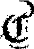
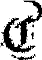
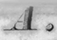
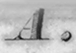
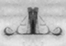
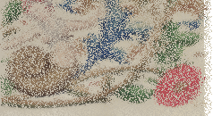
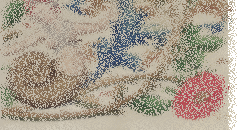
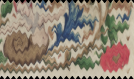
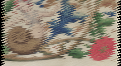
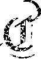

Deformations
Last modified: May 17, 2022
Contents
degrade_kanungo
Image [OneBit] degrade_kanungo (float(0.00, 1.00) eta, float(0.00, 1.00) a0, float a, float(0.00, 1.00) b0, float b, int k = 2, int random_seed = 0)
| Operates on: | Image [OneBit] |
|---|---|
| Returns: | Image [OneBit] |
| Category: | Deformations |
| Defined in: | deformation.py |
| Author: | Christoph Dalitz |
Degrades an image due to a scheme proposed by Kanungo et al. (see the reference below). This is supposed to emulate image defects introduced through printing and scanning.
The degradation scheme depends on six parameters (eta,a0,a,b0,b,k) with the following meaning:
- each foreground pixel (black) is flipped with probability a0*exp(-a*d^2) + eta, where d is the distance to the closest background pixel
- each background pixel (white) is flipped with probability b0*exp(-b*d^2) + eta, where d is the distance to the closest foreground pixel
- eventually a morphological closing operation is performed with a disk of diameter k. If you want to skip this step set k=0; in that case you should do your own smoothing afterwards.
The random generator is initialized with random_seed for allowing reproducible results.
References:
T. Kanungo, R.M. Haralick, H.S. Baird, et al.: A statistical, nonparametric methodology for document degradation model validation. IEEE Transactions on Pattern Analysis and Machine Intelligence 22, pp. 1209-1223 (2000)
Example 1: degrade_kanungo(0.0, 0.5, 0.5, 0.5, 0.5, 2, 0)
 

ink_diffuse
Image [OneBit|GreyScale|Grey16|Float|RGB] ink_diffuse (Choice [Linear Horizontal|Linear Vertical|Brownian] diffusion_type, float exponential_decay_constant, int random_seed = -1)
| Operates on: | Image [OneBit|GreyScale|Grey16|Float|RGB] |
|---|---|
| Returns: | Image [OneBit|GreyScale|Grey16|Float|RGB] |
| Category: | Deformations |
| Defined in: | deformation.py |
| Author: | Albert Brzeczko |
Simulates water-driven diffusion of ink in paper.
Example 1: ink_diffuse(0, 20)
 

inkrub
Image [OneBit|GreyScale|Grey16|Float|RGB] inkrub (int(0, 500) transcription_prob, int random_seed = -1)
| Operates on: | Image [OneBit|GreyScale|Grey16|Float|RGB] |
|---|---|
| Returns: | Image [OneBit|GreyScale|Grey16|Float|RGB] |
| Category: | Deformations |
| Defined in: | deformation.py |
| Author: | Albert Brzeczko |
Simulates rubbing off of ink from another page.
Example 1: inkrub(50)

noise
Image [OneBit|GreyScale|Grey16|Float|RGB] noise (int(0, 500) amplitude, Choice [Horizontal|Vertical] direction, int random_seed = -1)
| Operates on: | Image [OneBit|GreyScale|Grey16|Float|RGB] |
|---|---|
| Returns: | Image [OneBit|GreyScale|Grey16|Float|RGB] |
| Category: | Deformations |
| Defined in: | deformation.py |
| Author: | Albert Brzeczko |
Causes random shifting of pixels within a user-specified range, in a user-specified direction.
Example 1: noise(10, 0)
 

wave
Image [OneBit|GreyScale|Grey16|Float|RGB] wave (int(0, 9223372036854775807) amplitude, int(0, 9223372036854775807) period, Choice [Horizontal|Vertical] direction, Choice [Sinusoid|Square|Sawtooth|Triangle|Sinc] waveform, int offset, float turbulence = 0.00, int random_seed = -1)
| Operates on: | Image [OneBit|GreyScale|Grey16|Float|RGB] |
|---|---|
| Returns: | Image [OneBit|GreyScale|Grey16|Float|RGB] |
| Category: | Deformations |
| Defined in: | deformation.py |
| Author: | Albert Brzeczko |
Causes periodic disturbance of user-defined frequency, amplitude, and direction. Turbulence specifies the amount of random variation from that line.
Example 1: wave(5, 10, 0, 0, 0)

Example 2: wave(10, 5, 1, 2, 0)

white_speckles
Image [OneBit] white_speckles (float(0.00, 1.00) p, int n, int k = 2, Choice [rook|bishop|king] connectivity = king, int random_seed = 0)
| Operates on: | Image [OneBit] |
|---|---|
| Returns: | Image [OneBit] |
| Category: | Deformations |
| Defined in: | deformation.py |
| Author: | Christoph Dalitz |
Adds white speckles to an image. This is supposed to emulate image defects introduced through printing, scanning and thresholding.
The degradation scheme depends on three parameters (p,n,k) with the following meaning:
- Each black pixel in the input image is taken with probability p as a starting point for a random walk of length n. Consequently p can be interpreted as the speckle frequency and n as a measure for the speckle size.
- An image containing the random walk is smoothed by a closing operation with a rectangle of size k.
- Eventually the image with the random walks is subtracted from the input image, which results in white speckles at the random walk positions
Input arguments:
- p, n, k:
- speckle frequency, random walk length and closing disc size
- connectivity:
effects the connectivity of adjacent random walk points as shown in the following figure (in case of bishop moves the final closing operation whitens the neighbouring 4-connected pixels too):

References:
C. Dalitz, M. Droettboom, B. Pranzas, I. Fujinaga: A Comparative Study of Staff Removal Algorithms. IEEE Transactions on Pattern Analysis and Machine Intelligence 30, pp. 753-766 (2008)
Example 1: white_speckles(0.05, 5, 2, 2, 0)
